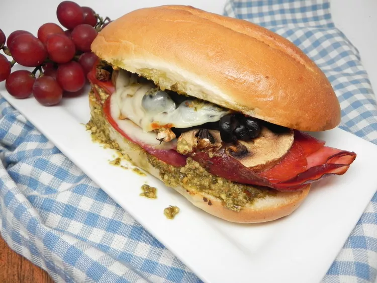

This three-meat sandwich is crispy on the outside, tender and cheesy on the inside, with salami being the star of the show. Your air fryer crisps up the meat and toasts the bread at the same time and in only 5 minutes. Feel free to sub mozzarella cheese for the provolone.
go back